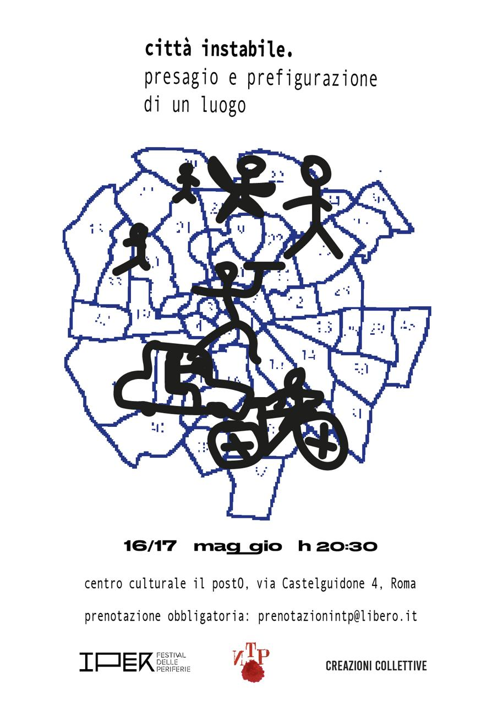
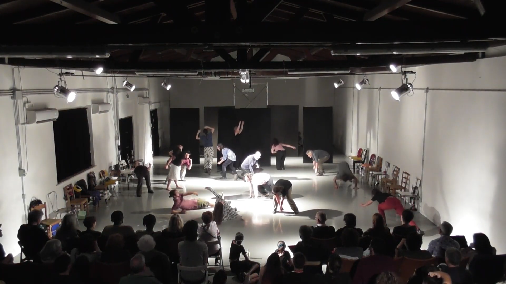
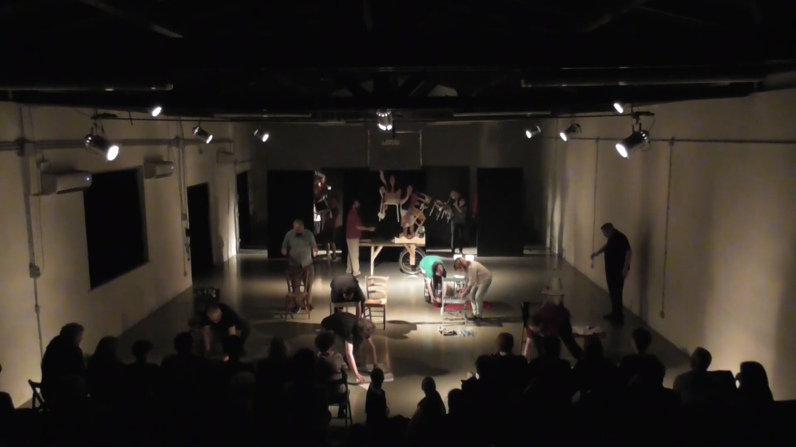
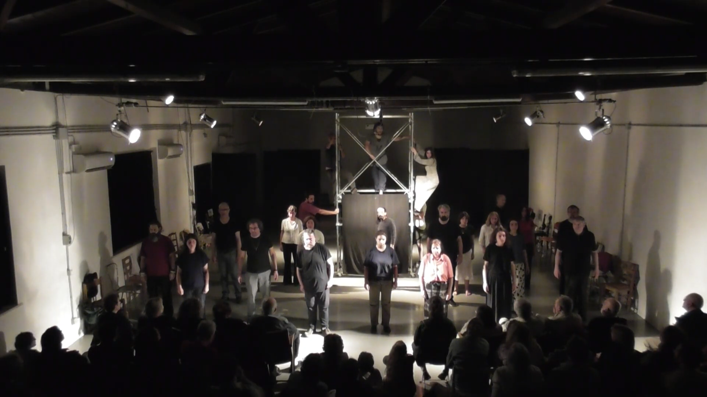

Sinossi
Una città, prima di percorrerla, di abitarla, la si crea, la si mette al mondo. Uno spazio senza la presenza di qualcuno che lo produca semplicemente non è. La città, la nostra città, viene messa al mondo ogni istante per ogni corpo che la vive. Corpi vivi che vivono e che la narrano: la città è il prodotto di un corpo che parla, che dice, che ascolta e che indica. Mettere in scena un corpo nella città. Nello spettacolo di nontantoprecisi la città che si concede come spazio orfano, dove i corpi dei venti attori in scena si muovono e, al variare del movimento, un paesaggio viene al mondo. I tempi, allo stesso modo, si riflettono addosso al corpo dello spettatore divenendo in questo modo parte della visione stessa. Il corpo ha un tempo preciso e questo tempo si dà a vedere. La drammaturgia è completamente assente, assente una storia, perché il corpo di nontantoprecisi è precisamente astorico. Lo sappiamo, certo, la città ha la propria storia, la propria economia, il proprio dialetto. Ma la città è anche una possibilità sorgiva, dove la necrosi può mettersi al mondo. E allora la scena si riempie di possibilità nuove, di parole altrimenti inaudite, di traiettorie che svelano lati oscuri, ipotesi mai percorse. La città si disvela nella scena e si disvela per la prima volta, come un parto, come un’epifania.


